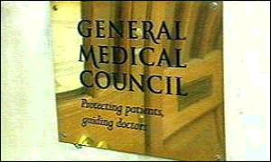
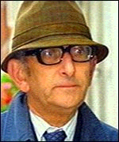
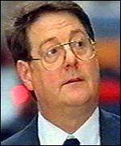

Circumcision doctors 'abused position'
 The GMC ruled against the doctors A retired surgeon who botched circumcision operations on two baby boys has been found guilty of abusing his professional position. The General Medical Council decided that obstetrician Mr Peter Silverstone had acted inappropriately and irresponsibly.
 Mr Peter Silverstone carried out the operations It has also ruled that the GP who referred the boys on had similarly abused his position.
A GMC disciplinary hearing heard that Mr Silverstone, of Newcastle upon Tyne, failed to properly anaesthetise the six and seven month old children during the operations which were carried out in 1998.
Howled in pain
One infant howled in pain throughout the 25 minute procedure, and the other bled for hours afterwards.
Zoe Johnson from the GMC said that Mr Silverstone was not sufficiently expert in the procedure.
 Dr Michael Harbinson referred the boys to Mr Silverstone While he had carried out religious circumcisions, he was not experienced in carrying them out for medical reasons.
The GMC also found against GP Dr Michael Harbinson, of Rowlands Gill, Tyne and Wear, who referred the babies' mothers to the surgeon.
The hearing heard that Dr Harbinson had pressurised one of the mothers into agreeing to the surgery, presenting the option of circumcision as a fait accompli.
The hearing will now consider whether the doctors are guilty of serious professional misconduct.
http://www.cirp.org/news/bbcnews08-21-01/